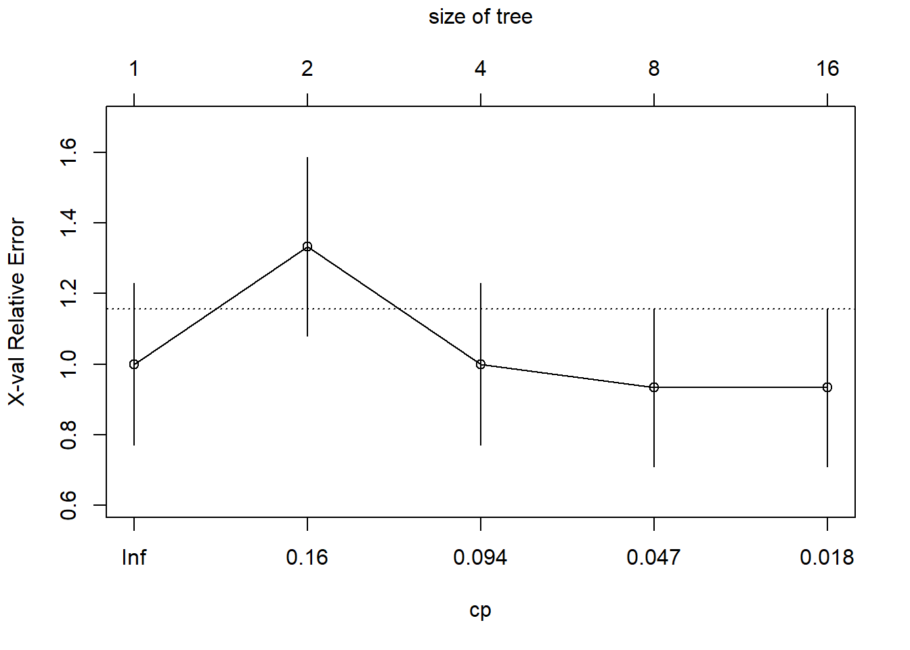
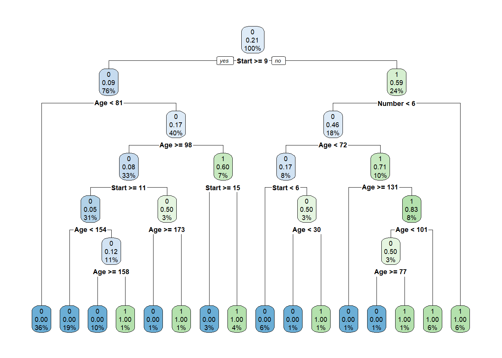
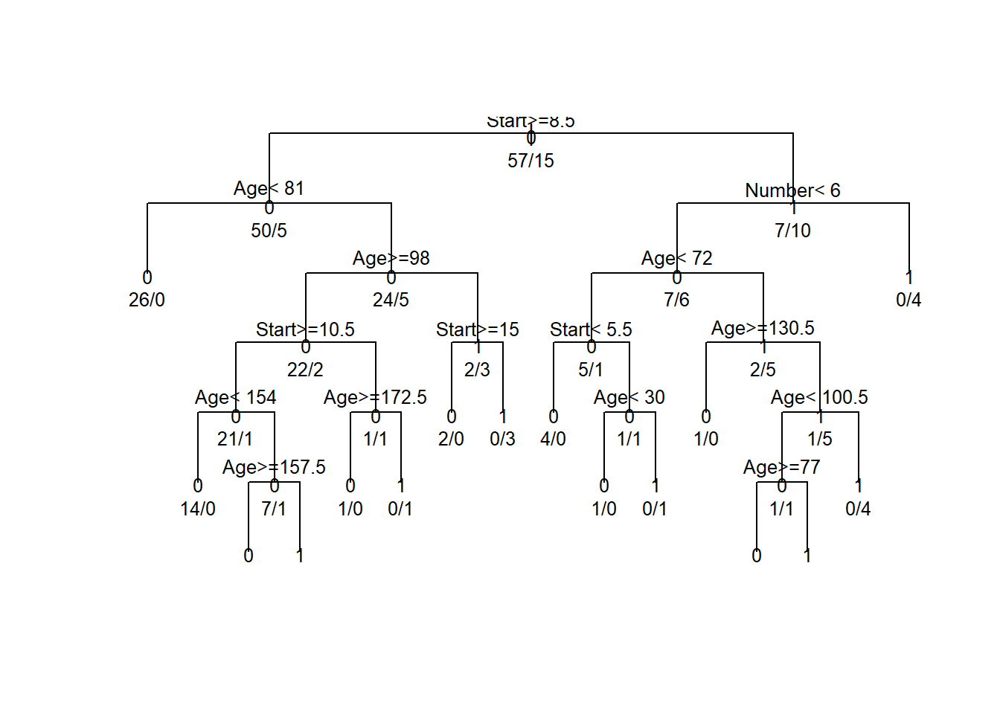
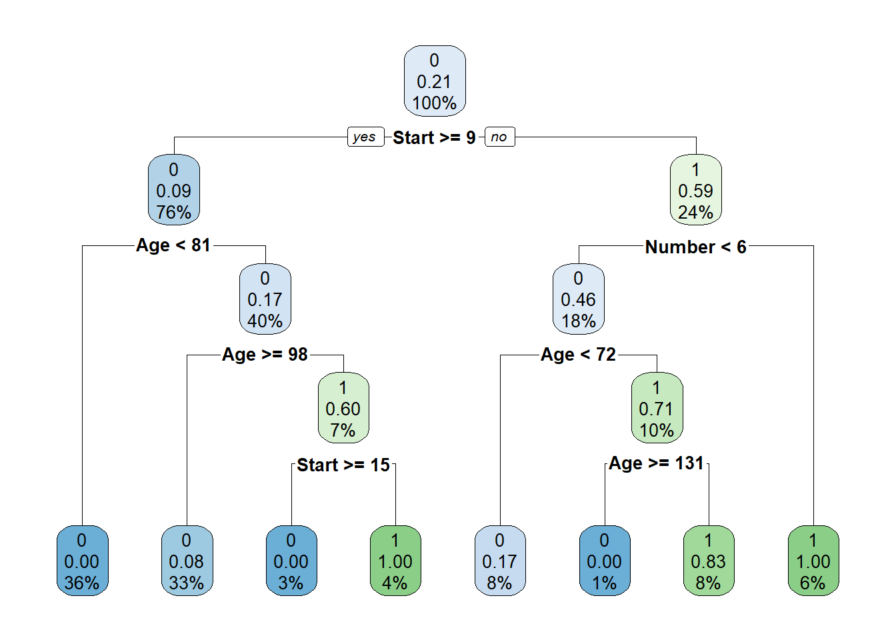
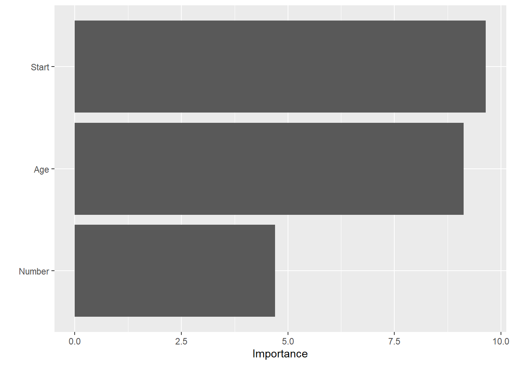

Consider the Kyphosis dataset in the R package rpart. The dataset has 81 rows and 4 columns representing data on children who have had corrective spinal surgery. The goal is to model the binary response Kyphosis, which indicates if a kyphosis (a type of deformation) was present or absent after the operation.
(a). Use set.seed(123457) to do a 90-10 train-test split of the dataset, making sure that the proportion of the binary response Kyphosis = present is about the same in the train, test, and full data sets. Why is checking this important?
We can see the proportions of the two levels of Kyphosis is similar from the training and entire dataset are similar, but the proportion of test data is sightly lower than others in the absent level but higher in the present level. But overall, the proportion of present level is about the same in train, test and entire datasets.
It is important to check the proportion of the binary response “Kyphosis = present” in the train, test and full dataset because we need to ensure that the proportion of the target class is similar in both the train and test datasets is crucial to maintain the representativeness of the data. Otherwise, if one dataset has a significantly different class distribution, it can lean to biased model performance evaluations.
A balanced distribution helps the model learn and generalize effectively. Moreover, having a balanced class distribution ensures that the evaluation metrics like accuracy, sensitivity and specificity are not biased by class imbalance. It can ensure that our model is trained and evaluated in a way that reflects its real-world performance.
(b). Fit a logit regression model to Kyphosis using all available predictors. Also, fit the null model. Compare the AIC values between the two models. Which model does AIC prefer?
full.logit<-glm(Kyphosis~., data = kyphosis.train, family =binomial(link="logit"))summary(full.logit)
Call:
glm(formula = Kyphosis ~ ., family = binomial(link = "logit"),
data = kyphosis.train)
Coefficients:
Estimate Std. Error z value Pr(>|z|)
(Intercept) -3.670245 1.866185 -1.967 0.04922 *
Age 0.019701 0.008567 2.300 0.02147 *
Number 0.683625 0.302864 2.257 0.02400 *
Start -0.247937 0.079180 -3.131 0.00174 **
---
Signif. codes: 0 '***' 0.001 '**' 0.01 '*' 0.05 '.' 0.1 ' ' 1
(Dispersion parameter for binomial family taken to be 1)
Null deviance: 73.691 on 71 degrees of freedom
Residual deviance: 48.724 on 68 degrees of freedom
AIC: 56.724
Number of Fisher Scoring iterations: 6
In the full model, we have three predictors which are Age, Number and Start. We can see that the coefficient of intercept is -3.670245. When all other predictor variables are zero, the log-od of Kyphosis being present is approximately -3.670245. The coefficient of Age is 0.019701 which mean for every one-unit increase in the Age, the log-odds of having kyphosis increases by approximately 0.019701 Furthermore, we can see that all the variables are statistically significant to predict Kyphosis, since the p-value of all variables are smaller than the significant level (0.05)
The dispersion parameter for binomial family is 1 which means the data’s variance matches the model’s predictions. The null deviance is 73.691 and residual deviance is 48.724 Since the residual deviance is smaller than the null deviance, which suggests the model with predictors is better fit than the null model. The AIC is 56.724.
null.logit<-glm(Kyphosis~1, data=kyphosis.train, family =binomial(link ="logit"))summary(null.logit)
Call:
glm(formula = Kyphosis ~ 1, family = binomial(link = "logit"),
data = kyphosis.train)
Coefficients:
Estimate Std. Error z value Pr(>|z|)
(Intercept) -1.3350 0.2902 -4.6 4.22e-06 ***
---
Signif. codes: 0 '***' 0.001 '**' 0.01 '*' 0.05 '.' 0.1 ' ' 1
(Dispersion parameter for binomial family taken to be 1)
Null deviance: 73.691 on 71 degrees of freedom
Residual deviance: 73.691 on 71 degrees of freedom
AIC: 75.691
Number of Fisher Scoring iterations: 4
In the null model, the coefficient of intercept is -1.3350, which mean when there is no predictor variable is considered, the log-odds is approximately -1.3350. Since the p-value is super small in the null model, which smaller than the significant level (0.05), it suggests that the intercept is highly significant in the model. The null deviance and residual deviance is the same, 73.691 and the AIC is 75.691.
The AIC value for the full model with all predictors is 56.724. The AIC value for the null model is 75.691. Since a lower AIC value indicates a better trade-off between goodness of fit and model complexity. In the case, the full regression model with all predictors has a lower AIC (56.724) compared to the null model (75.691). Therefore, AIC prefers the model with all available predictors. This suggests that the model with predictors provides a better fit to the data compared to a model with just a constant term. Full model is preferred.
(c). How will you use the roc curve and AUC in interpreting the full and null models? Compute using R code, and then explain.
library(pROC)
Type 'citation("pROC")' for a citation.
Attaching package: 'pROC'
The following objects are masked from 'package:stats':
cov, smooth, var
# Test data accuracypred.full <-predict(full.logit, newdata = kyphosis.test, type ="response")pred.null <-predict(null.logit, newdata = kyphosis.test, type ="response")# Compute ROC and AUC for the full modelroc.full <-roc(kyphosis.test$Kyphosis, pred.full, levels =c(1, 0))
In the above coding and result, the setting direction is “controls > cases” indicates that higher predicted values are associated with the control group (0), and lower predicted values are associated with the case group(1). An AUC of 0.7143 suggests that our model’s ability to distinguish between the two classes is fairly good.
# Compute ROC and AUC for the full modelroc.null <-roc(kyphosis.test$Kyphosis, pred.null, levels =c(1, 0))
Setting levels: control = 0, case = 1
Setting direction: controls < cases
Area under the curve: 0.5
The AUC value of 0.5 for the null model suggests that the model is not able to discriminate between the Kyphosis present and Kyphosis absent. It might indicates random chance or no discriminatory power.
After that, we can also check the accuracy of train data.
# Train data accuracypred.full <-predict(full.logit, newdata = kyphosis.train, type ="response")pred.null <-predict(null.logit, newdata = kyphosis.train, type ="response")# Compute ROC and AUC for the full and null modelsroc.full <-roc(kyphosis.train$Kyphosis, pred.full, levels =c(1, 0))
The AUC value of 0.8713 for the full model on the training data indicates a moderate level of discriminatory power. It suggests that the full logistic regression model is able to distinguish between Kyphosis present and absent in the training data.
# Null model for train dataroc.null <-roc(kyphosis.train$Kyphosis, pred.null, levels =c(1, 0))
Same with the result of test data in null model, the AUC is 0.5 which suggests that the model is not able to discriminate between the Kyphosis present and Kyphosis absent. We can see that the
(d). Pull out and interpret the effect of Age on
(i). the logit of the probability of presence of Kyphosis, and
In the full model on above, the coefficient for “Age” is estimated as 0.019701 For each one-unit increase in Age, the log-odd of Kyphosis being present increase by 0.019701 This means that as Age increases, the log-odds of Kyphosis being present also increase. Older children have a higher log-odds of having Kyphosis, while younger children have a lower log-odds.
The p-value for “Age” is 0.02147, which is smaller than the significant level (0.05). This suggests that the coefficient for “Age” is statistically significant, meaning that there is strong evidence that “Age” has a significant effect on the log-odds of Kyphosis being present.
(ii). the probability of presence of Kyphosis.
From the full model, to understand the effect on the probability of Kyphosis presence, we can use the logistic function (sigmoid function) to covert the log-odds to probabilities, which show the following:
Therefore, take an example, if the age is 10, the estimated probability of Kyphosis presence is approximately 54.97%.
With a positive coefficient of Age, the probability of Kyphosis presence increases as Age increases. This means that older children are more likely to have Kyphosis after operation compared to younger children. Conversely, for a one-unit decrease in Age, the probability of Kyphosis presence decreases. Younger children are less likely to have Kyphosis.
(e). Carry out a test of hypothesis to see whether the regression coefficient β for Age is significantly different than zero. Write H0 and H1 both in notation and in words, write the formula for the z test statistic, and carry out the test. Hint. Keep in mind that unlike the MLR model, we do not have t or F-tests in GLIM, instead we have z (or Wald) and chi-square tests.
Null Hypothesis (H0): β(Age)=0. There is no significant relationship between Age and the log-odds of Kyphosis being present.
Alternative Hypothesis (H1) β(Age)!≠0. There is a significant relationship between Age and the log-odds of Kyphosis being present
The z-test for the “Age” coefficient resulted in a Z value of approximately 2.299536the p-value is 0.02147451 Since the p-value is smaller than the significant level (0.05), we have enough evidence to reject the null hypothesis and accept the alternative hypothesis.
confint(full.logit)
Waiting for profiling to be done...
2.5 % 97.5 %
(Intercept) -7.748050442 -0.32705258
Age 0.004635386 0.03893429
Number 0.150970868 1.35257279
Start -0.420493467 -0.10359269
The 95% confidence interval for the “Age” coefficient, which ranges from 0.00464 to 0.0389, supports the significant of the “Age” coefficient. The interval does not include zero, which further indicates that the coefficient is statistically significant.
Overall, based on both Z-Test and the confidence interval, there is sufficient evidence to reject the null hypothesis. Therefore, we have enough evidence to conclude that the regression coefficient for Age is significantly difference from zero. It suggests that Age have a significant effect on Kyphosis presence in the model.
(f). Fit a reduced model removing the variables Number and Start from the full model. How will you use the test data to compare which is a better model: the full model or the reduced model?
reduced.logit <-glm(Kyphosis ~ Age, data = kyphosis.train, family =binomial(link ="logit"))summary(reduced.logit)
Call:
glm(formula = Kyphosis ~ Age, family = binomial(link = "logit"),
data = kyphosis.train)
Coefficients:
Estimate Std. Error z value Pr(>|z|)
(Intercept) -1.932304 0.568743 -3.397 0.00068 ***
Age 0.006735 0.005118 1.316 0.18815
---
Signif. codes: 0 '***' 0.001 '**' 0.01 '*' 0.05 '.' 0.1 ' ' 1
(Dispersion parameter for binomial family taken to be 1)
Null deviance: 73.691 on 71 degrees of freedom
Residual deviance: 71.903 on 70 degrees of freedom
AIC: 75.903
Number of Fisher Scoring iterations: 4
In the reduced model, the coefficient of intercept is -1.932304. The negative value suggests that at Age = 0, the log-odd of Kyphosis presence is negative which is low probability of Kyphosis. The coefficient of Age is 0.006735, indicates the effects of Age on the log-odds of Kyphosis presence if relatively small. A one-year increase in Age lead to 0.006735 increase in the log-odds of Kyphosis presence. In the model, the p-value of intercept is smaller than the significant level (0.05), which suggests that the intercept is statistically significant but Age has a larger p-value which has no significant effect on the log-odds of Kyphosis presence.
The null deviance is 73.691 and the residual deviance is 71.903. The difference of null deviance and residual deviance is little but still show that the model with Age is better fit than the null model. The AIC value is 75.903.
library(caret)
Loading required package: ggplot2
Loading required package: lattice
# Calculate predictions from the reduced modelpred.reduced <-predict(reduced.logit, newdata = kyphosis.test, type ="response")# Create binary predictions from probabilitiesb_reduced <-ifelse(pred.reduced >0.5, 1, 0)b_reduced <-factor(b_reduced, levels =levels(as.factor(kyphosis.test$Kyphosis)))# Create the confusion matrixcm.reduced <-confusionMatrix(reference =as.factor(kyphosis.test$Kyphosis), data =as.factor(b_reduced), mode ="everything")# Display the confusion matrixcm.reduced
Confusion Matrix and Statistics
Reference
Prediction 0 1
0 7 2
1 0 0
Accuracy : 0.7778
95% CI : (0.3999, 0.9719)
No Information Rate : 0.7778
P-Value [Acc > NIR] : 0.6781
Kappa : 0
Mcnemar's Test P-Value : 0.4795
Sensitivity : 1.0000
Specificity : 0.0000
Pos Pred Value : 0.7778
Neg Pred Value : NaN
Precision : 0.7778
Recall : 1.0000
F1 : 0.8750
Prevalence : 0.7778
Detection Rate : 0.7778
Detection Prevalence : 1.0000
Balanced Accuracy : 0.5000
'Positive' Class : 0
In the confusion matrix, there are 7 ture negative and 2 false positive. Both true positive and false negative are 0. The accuracy of the reduced model is 77.78%. The sensitivity is 1.00 which indicating that the model is very good at correctly predicting true positives. But the specificity is 0.00, suggesting that the model is not good at correctly prediciting true negative. The F1 score is 0.8750, indicating a reasonable balance between precision and recall. The recall is 1.
We can also create the confusion matrix to the full model.
pred.full <-predict(full.logit, newdata = kyphosis.test, type ="response")b_full <-ifelse(pred.full >0.5, 1, 0)# Create the confusion matrixcm.full <-confusionMatrix(reference =as.factor(kyphosis.test$Kyphosis), data =as.factor(b_full), mode ="everything")# Display the confusion matrixcm.full
Confusion Matrix and Statistics
Reference
Prediction 0 1
0 6 1
1 1 1
Accuracy : 0.7778
95% CI : (0.3999, 0.9719)
No Information Rate : 0.7778
P-Value [Acc > NIR] : 0.6781
Kappa : 0.3571
Mcnemar's Test P-Value : 1.0000
Sensitivity : 0.8571
Specificity : 0.5000
Pos Pred Value : 0.8571
Neg Pred Value : 0.5000
Precision : 0.8571
Recall : 0.8571
F1 : 0.8571
Prevalence : 0.7778
Detection Rate : 0.6667
Detection Prevalence : 0.7778
Balanced Accuracy : 0.6786
'Positive' Class : 0
In the confusion matrix of full model, there are 6 true negative and 1 true positive. In the prediction, there are 1 false positive and 1 false negative. The accuracy, sensitivity, specificity and F1 score of the model are 0.7778, 0.8571, 0.5000 and 0.8571. The recall is 0.8571.
In this comparison, the reduced model performs better in terms of sensitivity and F1 score, indicating that it does a better job of correctly classifying positive cases. Even though the reduced model sacrifices specificity, making it less effective classifying negative cases. But, we would like to focus on classifying positive cases that is more critical, therefore, we would perfer the reduced model.
(g). Find the best decision tree trained using the CART approach to classify the test data into 1 (presence of kyphosis) or 0 (absence of kyphosis). Make sure you compute and discuss all the metrics you have seen to assess the fit.
The tree used Age, Number, and Start as predictor variables. Root node error indicates the misclassification error at the root which is the starting point of the decision tree. In this case, the root node error is 0.20833 which means that initially, there is bout 20.83% of the cases were misclassified. We can see that the relative error for each level of the tree is decreases as the tree grows.
max(fit.allp$cptable[,"nsplit"])
[1] 15
min(fit.allp$cptable[,"nsplit"])
[1] 0
The maximum of the node is 15 and the minimum is 0.
The calculated CP value is 0.03333333, which is the value of the complexity parameter that results in the minimum cross-validation prediction error for the decision tree model.
The calculated minimum cross-validated prediction error (xerror) is 0.9333333.
plotcp(fit.allp)

The plot in above display the complexity parameter values and their corresponding cross-validated error rates for the decision tree. We can see how the CP parameter affects the size and accuracy of the decision tree.
summary(fit.allp)
Call:
rpart(formula = Kyphosis ~ ., data = kyphosis.train, method = "class",
control = rpart.control(minsplit = 1, cp = 0.01))
n= 72
CP nsplit rel error xerror xstd
1 0.20000000 0 1.0000000 1.0000000 0.2297341
2 0.13333333 1 0.8000000 1.3333333 0.2533723
3 0.06666667 3 0.5333333 1.0000000 0.2297341
4 0.03333333 7 0.2666667 0.9333333 0.2238827
5 0.01000000 15 0.0000000 0.9333333 0.2238827
Variable importance
Age Start Number
43 41 15
Node number 1: 72 observations, complexity param=0.2
predicted class=0 expected loss=0.2083333 P(node) =1
class counts: 57 15
probabilities: 0.792 0.208
left son=2 (55 obs) right son=3 (17 obs)
Primary splits:
Start < 8.5 to the right, improve=6.423797, (0 missing)
Number < 6.5 to the left, improve=2.750000, (0 missing)
Age < 39 to the left, improve=2.000000, (0 missing)
Surrogate splits:
Number < 6.5 to the left, agree=0.792, adj=0.118, (0 split)
Node number 2: 55 observations, complexity param=0.06666667
predicted class=0 expected loss=0.09090909 P(node) =0.7638889
class counts: 50 5
probabilities: 0.909 0.091
left son=4 (26 obs) right son=5 (29 obs)
Primary splits:
Age < 81 to the left, improve=0.8150470, (0 missing)
Start < 14.5 to the right, improve=0.7575758, (0 missing)
Number < 2.5 to the left, improve=0.2020202, (0 missing)
Surrogate splits:
Number < 4.5 to the right, agree=0.6, adj=0.154, (0 split)
Start < 9.5 to the left, agree=0.6, adj=0.154, (0 split)
Node number 3: 17 observations, complexity param=0.1333333
predicted class=1 expected loss=0.4117647 P(node) =0.2361111
class counts: 7 10
probabilities: 0.412 0.588
left son=6 (13 obs) right son=7 (4 obs)
Primary splits:
Number < 6 to the left, improve=1.773756, (0 missing)
Age < 97.5 to the left, improve=1.721008, (0 missing)
Start < 5.5 to the left, improve=1.114082, (0 missing)
Node number 4: 26 observations
predicted class=0 expected loss=0 P(node) =0.3611111
class counts: 26 0
probabilities: 1.000 0.000
Node number 5: 29 observations, complexity param=0.06666667
predicted class=0 expected loss=0.1724138 P(node) =0.4027778
class counts: 24 5
probabilities: 0.828 0.172
left son=10 (24 obs) right son=11 (5 obs)
Primary splits:
Age < 98 to the right, improve=2.2091950, (0 missing)
Start < 14.5 to the right, improve=1.2170390, (0 missing)
Number < 4.5 to the left, improve=0.6258621, (0 missing)
Node number 6: 13 observations, complexity param=0.1333333
predicted class=0 expected loss=0.4615385 P(node) =0.1805556
class counts: 7 6
probabilities: 0.538 0.462
left son=12 (6 obs) right son=13 (7 obs)
Primary splits:
Age < 72 to the left, improve=1.9377290, (0 missing)
Start < 7 to the left, improve=0.6282051, (0 missing)
Number < 3.5 to the left, improve=0.5170940, (0 missing)
Surrogate splits:
Number < 4.5 to the right, agree=0.615, adj=0.167, (0 split)
Start < 4 to the right, agree=0.615, adj=0.167, (0 split)
Node number 7: 4 observations
predicted class=1 expected loss=0 P(node) =0.05555556
class counts: 0 4
probabilities: 0.000 1.000
Node number 10: 24 observations, complexity param=0.03333333
predicted class=0 expected loss=0.08333333 P(node) =0.3333333
class counts: 22 2
probabilities: 0.917 0.083
left son=20 (22 obs) right son=21 (2 obs)
Primary splits:
Start < 10.5 to the right, improve=0.7575758, (0 missing)
Age < 137.5 to the left, improve=0.2380952, (0 missing)
Number < 3.5 to the right, improve=0.2380952, (0 missing)
Node number 11: 5 observations, complexity param=0.06666667
predicted class=1 expected loss=0.4 P(node) =0.06944444
class counts: 2 3
probabilities: 0.400 0.600
left son=22 (2 obs) right son=23 (3 obs)
Primary splits:
Start < 15 to the right, improve=2.400000, (0 missing)
Number < 4.5 to the left, improve=1.066667, (0 missing)
Age < 84.5 to the right, improve=0.400000, (0 missing)
Surrogate splits:
Number < 4.5 to the left, agree=0.8, adj=0.5, (0 split)
Node number 12: 6 observations, complexity param=0.03333333
predicted class=0 expected loss=0.1666667 P(node) =0.08333333
class counts: 5 1
probabilities: 0.833 0.167
left son=24 (4 obs) right son=25 (2 obs)
Primary splits:
Start < 5.5 to the left, improve=0.6666667, (0 missing)
Age < 35 to the left, improve=0.3333333, (0 missing)
Number < 4.5 to the left, improve=0.3333333, (0 missing)
Node number 13: 7 observations, complexity param=0.06666667
predicted class=1 expected loss=0.2857143 P(node) =0.09722222
class counts: 2 5
probabilities: 0.286 0.714
left son=26 (1 obs) right son=27 (6 obs)
Primary splits:
Age < 130.5 to the right, improve=1.1904760, (0 missing)
Number < 2.5 to the left, improve=1.1904760, (0 missing)
Start < 4 to the left, improve=0.4571429, (0 missing)
Node number 20: 22 observations, complexity param=0.03333333
predicted class=0 expected loss=0.04545455 P(node) =0.3055556
class counts: 21 1
probabilities: 0.955 0.045
left son=40 (14 obs) right son=41 (8 obs)
Primary splits:
Age < 154 to the left, improve=0.15909090, (0 missing)
Start < 13.5 to the right, improve=0.15909090, (0 missing)
Number < 3.5 to the right, improve=0.06293706, (0 missing)
Surrogate splits:
Start < 16.5 to the left, agree=0.727, adj=0.25, (0 split)
Node number 21: 2 observations, complexity param=0.03333333
predicted class=0 expected loss=0.5 P(node) =0.02777778
class counts: 1 1
probabilities: 0.500 0.500
left son=42 (1 obs) right son=43 (1 obs)
Primary splits:
Age < 172.5 to the right, improve=1, (0 missing)
Number < 3.5 to the right, improve=1, (0 missing)
Node number 22: 2 observations
predicted class=0 expected loss=0 P(node) =0.02777778
class counts: 2 0
probabilities: 1.000 0.000
Node number 23: 3 observations
predicted class=1 expected loss=0 P(node) =0.04166667
class counts: 0 3
probabilities: 0.000 1.000
Node number 24: 4 observations
predicted class=0 expected loss=0 P(node) =0.05555556
class counts: 4 0
probabilities: 1.000 0.000
Node number 25: 2 observations, complexity param=0.03333333
predicted class=0 expected loss=0.5 P(node) =0.02777778
class counts: 1 1
probabilities: 0.500 0.500
left son=50 (1 obs) right son=51 (1 obs)
Primary splits:
Age < 30 to the left, improve=1, (0 missing)
Number < 4 to the left, improve=1, (0 missing)
Node number 26: 1 observations
predicted class=0 expected loss=0 P(node) =0.01388889
class counts: 1 0
probabilities: 1.000 0.000
Node number 27: 6 observations, complexity param=0.03333333
predicted class=1 expected loss=0.1666667 P(node) =0.08333333
class counts: 1 5
probabilities: 0.167 0.833
left son=54 (2 obs) right son=55 (4 obs)
Primary splits:
Age < 100.5 to the left, improve=0.6666667, (0 missing)
Start < 2 to the left, improve=0.3333333, (0 missing)
Number < 4.5 to the left, improve=0.1666667, (0 missing)
Surrogate splits:
Start < 2 to the left, agree=0.833, adj=0.5, (0 split)
Node number 40: 14 observations
predicted class=0 expected loss=0 P(node) =0.1944444
class counts: 14 0
probabilities: 1.000 0.000
Node number 41: 8 observations, complexity param=0.03333333
predicted class=0 expected loss=0.125 P(node) =0.1111111
class counts: 7 1
probabilities: 0.875 0.125
left son=82 (7 obs) right son=83 (1 obs)
Primary splits:
Age < 157.5 to the right, improve=1.75, (0 missing)
Start < 13.5 to the right, improve=0.75, (0 missing)
Number < 3.5 to the right, improve=0.15, (0 missing)
Node number 42: 1 observations
predicted class=0 expected loss=0 P(node) =0.01388889
class counts: 1 0
probabilities: 1.000 0.000
Node number 43: 1 observations
predicted class=1 expected loss=0 P(node) =0.01388889
class counts: 0 1
probabilities: 0.000 1.000
Node number 50: 1 observations
predicted class=0 expected loss=0 P(node) =0.01388889
class counts: 1 0
probabilities: 1.000 0.000
Node number 51: 1 observations
predicted class=1 expected loss=0 P(node) =0.01388889
class counts: 0 1
probabilities: 0.000 1.000
Node number 54: 2 observations, complexity param=0.03333333
predicted class=0 expected loss=0.5 P(node) =0.02777778
class counts: 1 1
probabilities: 0.500 0.500
left son=108 (1 obs) right son=109 (1 obs)
Primary splits:
Age < 77 to the right, improve=1, (0 missing)
Number < 4.5 to the left, improve=1, (0 missing)
Node number 55: 4 observations
predicted class=1 expected loss=0 P(node) =0.05555556
class counts: 0 4
probabilities: 0.000 1.000
Node number 82: 7 observations
predicted class=0 expected loss=0 P(node) =0.09722222
class counts: 7 0
probabilities: 1.000 0.000
Node number 83: 1 observations
predicted class=1 expected loss=0 P(node) =0.01388889
class counts: 0 1
probabilities: 0.000 1.000
Node number 108: 1 observations
predicted class=0 expected loss=0 P(node) =0.01388889
class counts: 1 0
probabilities: 1.000 0.000
Node number 109: 1 observations
predicted class=1 expected loss=0 P(node) =0.01388889
class counts: 0 1
probabilities: 0.000 1.000
library(rpart.plot)rpart.plot(fit.allp, extra ="auto")

plot(fit.allp, uniform =TRUE, main =" ")text(fit.allp, use.n =TRUE, all =TRUE, cex = .8)

In the above summary and plots, the tree is displayed as a hierarchy of nodes, where each node represents a decision point or terminal outcome. Node numbers are assigned to each node in the tree.
In the plot, there are three numbers associated with each node. The top one is represent the predicted class which are 0 or 1, that 0 indicate Kyphosis is absent and 1 indicate Kyphosis is present. The middle number is typically associated with the probability or likelihood of an instance falling into this node being assigned to a particular class. For example, if the number is 0.59, indicating that there is a 59% probability of an instance in this node belonging to that class. Finally, there is a percentage in every node. It is to express the probability associated with one of the class labels. For example, 24%, is means that approximately 24% of the instance in the node are likely to be classified as that particular class.
# Test with the fit decision treetest_df <-data.frame(actual = kyphosis.test$Kyphosis, pred =NA)test_df$pred <-predict(fit.allp, newdata = kyphosis.test, type ="class")(conf_matrix_base <-table(test_df$actual, test_df$pred)) #confusion matrix
0 1
0 6 1
1 1 1
The confusion matrix shows that 6 cases are correctly classified as 0, while 1 was correctly classified as 1. The rest were misclassified.
library(rpart.plot)rpart.plot(pfit.allp, extra ="auto")

# Test with the prun decision treetest_df <-data.frame(actual = kyphosis.test$Kyphosis, pred =NA)test_df$pred <-predict(pfit.allp, newdata = kyphosis.test, type ="class")(conf_matrix_base_p <-table(test_df$actual, test_df$pred)) #confusion matrix
The sensitivity is 0.8571429, the specificity is 0.5, while the overall misclassification rate is about 0.2222.
Overall, we can see that the result of sensitivity, specificity and misclassification rate is same for full decision tree and pruned decision tree. Therefore, both of them are the best decision tree.
(h). Use the R package ranger to train a random forest to the data and then validate on the test data. Optional. For this data, can you also try and run the randomForestSRC package and compare the run times for the two packages?
library(ranger)
Warning: package 'ranger' was built under R version 4.3.2
Ranger result
Call:
ranger(Kyphosis ~ ., data = kyphosis.train, importance = "impurity", mtry = 3)
Type: Classification
Number of trees: 500
Sample size: 72
Number of independent variables: 3
Mtry: 3
Target node size: 1
Variable importance mode: impurity
Splitrule: gini
OOB prediction error: 18.06 %
In the above result, this is a classification problem and there are 500 decision trees were created and combined to make decision. There are 72 observations and 3 predictors in the training dataset. We set Mtry to 3 that represents the number of variables considered at each split in a decision tree. The target node size specifies the minimum node size for terminal nodes in the decision tree. We set it to 1 so that the trees are allowed to continue splitting nodes until there is only one observation in each terminal node. We use gini index to measure the impurity in decision tree algorithms. The out-of-bag prediction error is an estimate of how well the random forest model is likely to perform on new, unseen data. It is reported as 18.06%, which means that the model is expected to make errors on about 18.06% of new, unseen data points.
library(vip)
Warning: package 'vip' was built under R version 4.3.2
Attaching package: 'vip'
The following object is masked from 'package:utils':
vi
(v1<-vi(fit.rf.ranger))
# A tibble: 3 × 2
Variable Importance
<chr> <dbl>
1 Start 9.65
2 Age 9.13
3 Number 4.70
vip(v1)

We have calculate the variable importance for a random forest model created with the “ranger” function. For “Start” has an importance score of approximately 9.645254 “Age” has an importance score of approximately 9.128193 “Number” has an importance score of approximately 4.696776, which also plot a graph for the importance score.
pred <-predict(fit.rf.ranger, data = kyphosis.test)test_df <-data.frame(actual = kyphosis.test$Kyphosis, pred =NA)test_df$pred <- pred$predictions(conf_matrix_rf <-table(test_df$actual, test_df$pred)) #confusion matrix
0 1
0 6 1
1 1 1
For the random forest using ranger function, there are 6 true negative, 1 true positive, 1 false positive and 1 false negative in the confusion matrix.
Sample size: 72
Frequency of class labels: 57, 15
Number of trees: 500
Forest terminal node size: 1
Average no. of terminal nodes: 11.97
No. of variables tried at each split: 2
Total no. of variables: 3
Resampling used to grow trees: swor
Resample size used to grow trees: 46
Analysis: RF-C
Family: class
Splitting rule: gini *random*
Number of random split points: 10
Imbalanced ratio: 3.8
(OOB) Brier score: 0.14185669
(OOB) Normalized Brier score: 0.56742678
(OOB) AUC: 0.78947368
(OOB) PR-AUC: 0.43942942
(OOB) G-mean: 0.6098605
(OOB) Requested performance error: 0.18055556, 0.07017544, 0.6
Confusion matrix:
predicted
observed 0 1 class.error
0 53 4 0.0702
1 9 6 0.6000
(OOB) Misclassification rate: 0.1805556
Same as ranger, we use classification method. Especially, we can see the Brier score, AUC, G-mean and the Requested performance. The brier score and the normalized brier score are 0.14 and 0.56 that are a metric for assessing the accuracy of probabilistic prediction, evaluates the model’s performance using samples that were not used during training. The AUC and PR-AUC are 0.79 and 0.44 which also is the classification model performance. The G-mean is 0.61 and the requested performance error is 0.18, 0.07, 0.6.
In the confusion matrix, it shows that there are 53 True negatives, 4 False positives, 9 False negative and 6 True positives. The out-of-bag misclassification rate is 0.18, represents the overall classification error based on out-of-bag samples.
rf_pred_rfsrc <-predict(rf_model_rfsrc, data = kyphosis.test)$predicted
# Measure run time for rangerranger_time <-system.time({ranger(Kyphosis ~ ., data = kyphosis.train)})# Measure run time for randomForestSRCrfsrc_time <-system.time({rfsrc(Kyphosis ~ ., data = kyphosis.train)})# Compare the run timesprint(ranger_time)
user system elapsed
0 0 0
print(rfsrc_time)
user system elapsed
0.00 0.00 0.01
To compare the run time of two difference random forest algorithms, there are three times, which are user time, system time and elapsed time. User time is the amount of CPU time used by the user’s code. For ranger, the user time is 0.01 and for rfsrc is 0.02. System time is the amount of CPU time used by the operating system for system-level operations, like I/O operations. For ranger and rfsrc are both 0.00 in system time. Finally, elapsed time is the total time elapsed from the start of the code execution to its completion. This includes both user time and system time. For ranger, the time is 0.02 and for rfsrc is 0.03 second.
It suggests that ranger used less CPU time in the user model compared to ranger for this specific dtaset and task and also less elapsed time from the start of the code execution to its completion. Therefore, it suggested that ranger is run more faster than rfsrc.
(i). Use and discuss the XGBooost approach to analyze the Kyphosis dataset.
library(xgboost)
Warning: package 'xgboost' was built under R version 4.3.2
library(Matrix)
We would like to transforming the predictor matrics using dummy encoding. In the following, we have transform the train and test data into two matrices which are “matrix_predictors.train” and “matrix_predictors.test” that have been encoded using dummy variables, making them suitable for use in machine learning models that require numerical input.
# Transform the predictor matrix using dummy (or indictor or one-hot) encoding matrix_predictors.train <-as.matrix(sparse.model.matrix(Kyphosis ~., data = kyphosis.train))[, -1]matrix_predictors.test <-as.matrix(sparse.model.matrix(Kyphosis ~., data = kyphosis.test))[, -1]
We would extract the predictor variables from the training dataset and converts them into a matrix. Moreover, converts the factor Kyphosis in the training dataset to a numeric vector. Same as the testing dataset.
We have set up the watchlist and parameter configurations for training an xgboost model.
watchlist is a list specifying the datasets for monitoring during the training process. It includes the training dataset and the test dataset. This allows us to evaluate the model’s performance on both datasets during training
watchlist <-list(train = dtrain, test = dtest)param <-list(max_depth =2, eta =1, nthread =2,objective ="binary:logistic", eval_metric ="auc")
We would like to calculated the prediction accuracy on our training data using XGBoost model. In the confusion matrix, there are 56 true negative, 1 false positive, 6 false negative and 9 true positive.
sum(diag(tab))/sum(tab)
[1] 0.9027778
The accuracy of XGBost model on the training data is 0.9027778. This means that ourr model correctly classified about 90.28% of the instances in the training dataset.
In the above code, we have make predictions on the test data. The predictions are then thresholded at 0.5 to convert the predicted probabilities into binary predictions.
# Measure prediction accuracy on test data(tab1<-table(kyphosis.test.gbm,prediction))
prediction
kyphosis.test.gbm 0 1
0 6 1
1 1 1
In the above is the confusion matrix of the testing data. We can see that there are 6 true negative and 1 true positive. For the false negative and false positive are both 1 respectively.
Confusion Matrix and Statistics
Reference
Prediction 0 1
0 6 1
1 1 1
Accuracy : 0.7778
95% CI : (0.3999, 0.9719)
No Information Rate : 0.7778
P-Value [Acc > NIR] : 0.6781
Kappa : 0.3571
Mcnemar's Test P-Value : 1.0000
Sensitivity : 0.8571
Specificity : 0.5000
Pos Pred Value : 0.8571
Neg Pred Value : 0.5000
Precision : 0.8571
Recall : 0.8571
F1 : 0.8571
Prevalence : 0.7778
Detection Rate : 0.6667
Detection Prevalence : 0.7778
Balanced Accuracy : 0.6786
'Positive' Class : 0
About the accuracy of the model, it measures the proportion of correct predictions out of all predictions. It is 77.78%, the model correctly predicted 77.78% of the cases. The sensitivity is 85.61% and the specificity is 50%. An F1 score of 0.8571 indicates a good balance between precision and recall. Overall, the model appears to perform resonably well that with a high sensitivity and specificity, a fairly high accuracy 77.78%.